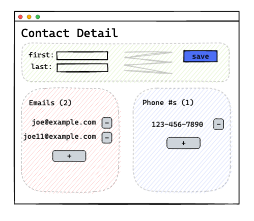

The trade-off, though, is that a uniform interface degrades efficiency, since information is transferred in a standardized form rather than one which is specific to an application’s needs. The REST interface is designed to be efficient for large-grain hypermedia data transfer, optimizing for the common case of the Web, but resulting in an interface that is not optimal for other forms of architectural interaction.
-Roy Fielding, https://www.ics.uci.edu/~fielding/pubs/dissertation/rest_arch_style.htm#sec_5_1_5
We are obviously fans of hypermedia and think that it can address, at least in part, many of the problems that the web development world is facing today:
With htmx and the additional UX possibilities that it gives you, we believe that many modern web applications can be built using HTML and the hypermedia paradigm.
With that being said, as with all technical choices, there are tradeoffs associated with hypermedia. In this article we will give you some ways to think about if hypermedia will be a good fit for an application or feature you are building.
Before we get into the details of when hypermedia is a good choice, we’d like to clarify that adopting hypermedia is not an either/or decision when building a web application. Even the most Single-y of Single Page Applications utilizes hypermedia after all: as a bootstrap mechanism, to start the application.
In his talk, Have SPAs Ruined The Web, Rich Harris gives us the term “Transitional” Applications, that is applications that mix both hypermedia and non-hypermedia (SPA) concepts. We have responded to Mr. Harris’ talk in more detail here, but suffice to say we violently agree with him that a pragmatic “Transitional” approach to web development is best: you should use the right tool for the particular job you are working on.
Where we would likely disagree with Mr. Harris is where “the line” is between features that can be implemented effectively in hypermedia and features that require a more sophisticated client-side approach. We feel that, with htmx, hypermedia can go much, much further than many web developers today believe is possible. And, further, that, for many applications, it can address many or all of their UX needs.
In The Mother Of All htmx Demos, David Guillot of Contexte shows how replacing React with htmx lead to a 67% reduction in the total codebase, along with numerous other eye-popping results.
As much as we would like to claim that every team moving from React to htmx would experience these results, the fact is that the Contexte web application is extremely amenable to the hypermedia style.
What makes Contexte so perfect for hypermedia is that it is a media-oriented web application, showing articles consisting of text and images for reading. It has a sophisticated filtering mechanism and other niceties, but the crux of the application is displaying and categorizing articles. This is exactly the sort of thing that hypermedia was designed to do, and this is why htmx and hypermedia worked so well for their application.
Another area where hypermedia has a long track-record of success is CRUD-y web applications, in the Ruby on Rails style. If your main application mechanic is showing forms and saving the forms into a database, hypermedia can work very well.
And, with htmx, it can also be very smooth, and not just constrained to the simple list view/detail view approach many server side applications take.
One area where hypermedia can start to go a little wobbly is when you have UI dependencies that span structural areas of the screen. A good example of this, and one that often comes up when discussing the hypermedia approach, is the issue count number shown on the “Issues” tab in GitHub. For a long time, when you closed an issue on GitHub, the issue count on the tab did not update properly. GitHub, in general (although not exclusively), uses a hypermedia-style application.
“Ah ha!”, exclaims the SPA enthusiast, “See, even GitHub can’t get this right!”
Well, GitHub has fixed the issue, but it does demonstrate a problem with the hypermedia approach: how do you update disjoint parts of the UI cleanly? htmx offers a few techniques for making this work, and Contexte, in their talk, discuss handling this situation very cleanly, using the event approach.
But, let us grant that this is an area where the hypermedia approach can get into trouble. To avoid this problem, one potential strategy is to colocate dependent elements for a given resource within a given region or area on the screen in an application.
As an example, consider a contact application whose detail screen for displaying and editing a contact has:
This UI could be laid out in the following manner:

In this scenario, each subsection can have its own dedicated hypermedia end-points:
/contacts/<id>/details for the first name/last name/ etc. info/contacts/<id>/emails for the email section/contacts/<id>/phonenumbers for the phone numbers sectionThe trick here is that the email and phone counts are co-located on the screen with their collections, which allows you to target just that particular area for update when a modification is made to the respective collections. All the data dependencies are co-located within a single area that can be updated via a single, simple and obvious target, and that, further, don’t interfere with one another when they are replaced.
Each area effectively forms a sort of server-side component, independent of the other areas on the screen, and they are all nested within a broader contact detail user interface.
Note that our hypermedia API (i.e. our end-points) in this case is driven by the UI: we have a particular UI layout that we want to achieve, and we adapt our API to that. If the UI changed, we would have no qualms with completely changing our API to satisfy the new requirements. This is a unique aspect of developing with hypermedia, and we discuss it in more detail here.
Of course, there may be UI requirements that do not allow for grouping of dependent element in this manner and, if the techniques mentioned above aren’t satisfactory, then it may be time to consider an alternative approach.
A final area where hypermedia outperforms other options is when you need “deep links”, that is, links into your application that go beyond the landing page, or when you need excellent first-render performance.
Since hypermedia is the natural language of the web, and since browsers are very good at rendering HTML given a URL, using this approach is hard to beat for “traditional” web features such as these.
As we discussed above in the section on “nested” UIs, one area where hypermedia can have trouble is when there are many UI dependencies spread across your UI and you can’t afford to “update the whole UI”. This is what Roy Fielding was getting at in the quote at the top of this article: the web was designed for large-grain hypermedia data transfers, not for lots of small data exchanges.
Particularly difficult for hypermedia to handle is when these dependencies are dynamic, that is, they depend on information that cannot be determined at server-side render-time. A good example of this is something like a spreadsheet: a user can enter an arbitrary function into a cell and introduce all sorts of dependencies on the screen, on the fly.
(Note, however, that for many applications, the “editable row” pattern is an acceptable alternative to more general spreadsheet-like behavior, and this pattern does play well with hypermedia by isolating edits within a bounded area.)
The hypermedia distributed architecture leans heavily on the server side for rendering representations of resources. When a server is down or unreachable, the architecture will obviously have trouble. It is possible to use Service Workers to handle offline requests (although this is a complex option), and it is also easy to detect when a hypermedia application is offline and show an offline message, as many thick-client application do.
But if your application requires full functionality in an offline environment, then the hypermedia approach is not going to be an acceptable one.
Another situation where hypermedia is not going to be a good approach is if your UI state is updated frequently. A good example is an online game that needs to capture mouse movements. Putting a hypermedia network request in-between a mouse move and a UI update will not work well, and you would be far better off writing your own client-side state management for the game and syncing with a server using a different technology.
Of course, your game may also have a setting page and that setting page might be better done with hypermedia than whatever solution you use for the core of your game. There is nothing wrong with mixing approaches, in the Transitional style!
We should note, however, that it is typically easier to embed SPA components within a larger hypermedia architecture, than vice-versa. Isolated client-side components can communicate with a broader hypermedia application via events, in the manner demonstrated in the drag-and-drop Sortable.js + htmx example.
A final reason to not choose hypermedia isn’t technical, but rather sociological: currently, hypermedia simply isn’t
in favor in web development. Many companies have adopted React as their standard library for building web applications.
Many developers and consultants have bet their careers on it. Many hiring managers have never heard of hypermedia, let
alone htmx, but put React on every job they post out of habit. It is certainly much easier to hire for!
While this is frustrating, it is a real phenomenon and should be borne in mind with humility. Although Contexte was able to rewrite their application quickly and effectively in htmx, not all teams are as small, agile and passionate, nor are all applications such slam dunks for the approach. It may be better to adopt hypermedia around the edges, perhaps for internal tools first, to prove its value first, before taking a broader look at it.
We are often asked: “OK, so what sorts of applications wouldn’t htmx be good for”. We prefer to think about things on a feature-by-feature basis using the “Transitional” application concept, but it is useful to have some broad, popular applications in mind when thinking about just how much might be done in hypermedia versus other approaches.
To give an example of two famous applications that we think could be implemented cleanly in hypermedia, consider Twitter or GMail. Both web applications are text-and-image heavy, with coarse-grain updates and, thus, would be quite amenable to a hypermedia approach.
Two famous examples of web applications that would not be amenable to a hypermedia approach are Google Sheets and Google Maps. Google Sheets can have a large amounts of state within and interdependencies between many cells, making it untenable to issue a server request on every cell update. Google Maps, on the other hand, responds rapidly to mouse movements and simply can’t afford a server round trip for every one of them. Both of these applications require a much more sophisticated client-side setup than what hypermedia can provide.
Of course, the vast majority of web applications are nowhere near the scale and complexity of these examples. And almost every web application, even Google Sheets or Google Maps, has parts where, potentially, the hypermedia approach would be better: simpler, faster and cleaner.
Having hypermedia as a tool in your tool-chest will improve your ability to address engineering problems as a web developer, even if it doesn’t become your favorite hammer. There is a good theoretical basis for the approach, practical benefits for many applications, and it is “with the grain” of the web in a way that other approaches are not.